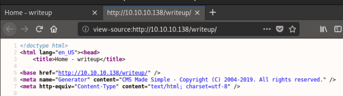

# CMS Made Simple
CMS Made Simple is an open source content management system to provide developers, programmers and site owners a web-based development and administration area. It's basically another admin panel.
## Locations
•
/admin - Login page
•
/config.php - Database credentials are stored here
## Database Structure
https://cmscanbesimple.org/blog/cms-made-simple-admin-password-recoveryhttps://forum.cmsmadesimple.org/viewtopic.php?t=14467You can read usernames from the
cms_users table.
select user_id,username,password from cms_users;## Identifying CMS Made Simple
You might be able to find a reference to by viewing the HTML source code of the pages where it's installed
(example below from
hackthebox Writeup)
## Exploits
There are a ton of exploits for
CMS Made Simplesearchsploit CMS Made Simple### CMS Made Simple < 2.2.10 - SQL Injection
https://www.exploit-db.com/exploits/46635A SQL injection exploit where you can grab usernames and passwords.
Used in hackthebox Writeup.